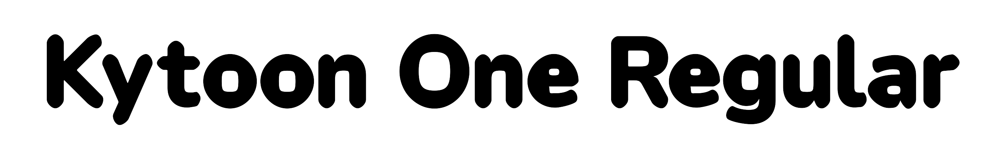

Kytoon One is a display typeface derived from Nunito by Vernon Adams. Every contour has been pushed outward and all corners rounded as far as they go, so the letters look inflated, like type blown full of air.
Kytoon One starts from Nunito. A script at sources/kytoon.py pushes the outlines out and rounds the corners to make the puffy shapes. Then the shapes get fixed by hand in the UFO in this repo, so the script is just the starting point. It's one weight, made for big text like posters and titles.
Kytoon One includes Latin and Cyrillic coverage for most European languages. Because of its inflated forms, it works best at display sizes, above 24pt, where the puffy character comes through.
Nunito was originally designed by Vernon Adams. Kytoon One is a derivative work by Michael Seh.
